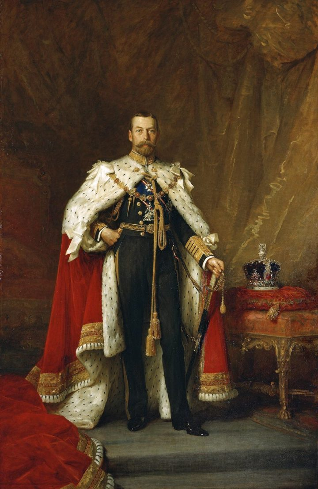
George V
King · 1910–1936
Every monarch, State President and President to have held the office since the Union was formed in 1910.
Under the Union of South Africa the British monarch was head of state, represented in the country by a Governor-General.

King · 1910–1936
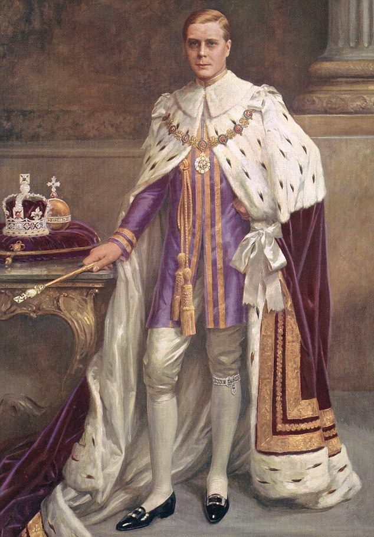
King · 1936
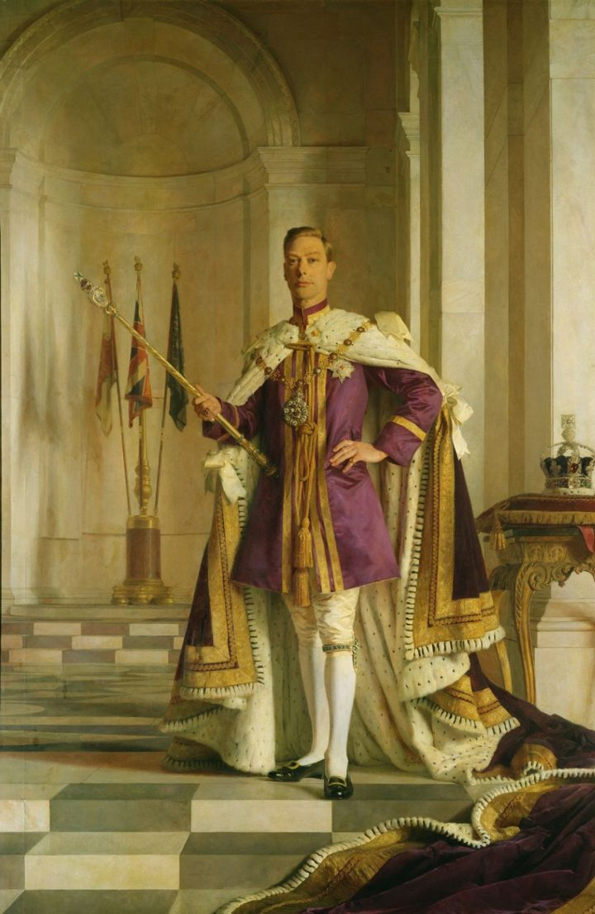
King · 1936–1952
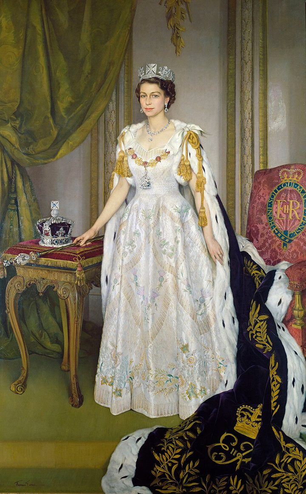
Queen · 1952–1961
The Governor-General represented the monarch in South Africa and carried out the duties of head of state on the Crown’s behalf.
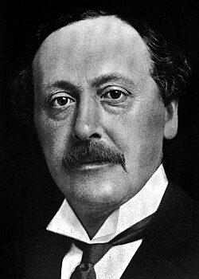
1st Governor-General · 1910–1914
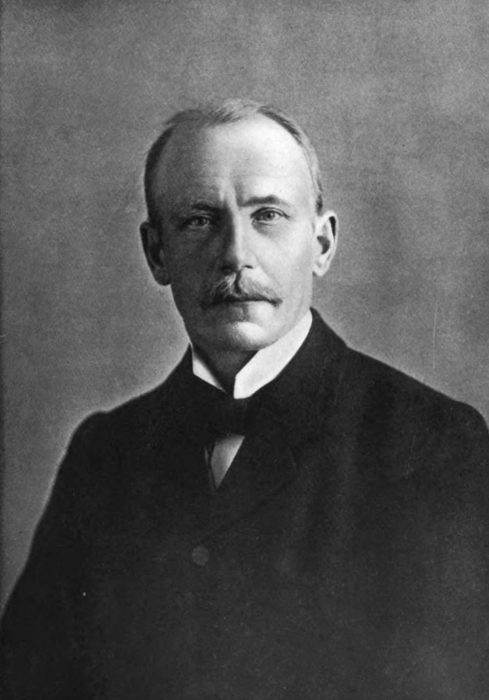
2nd Governor-General · 1914–1920
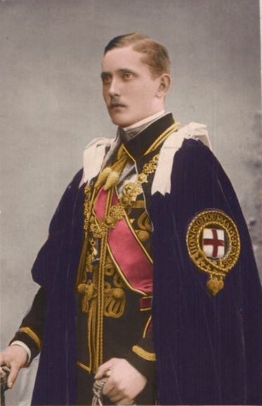
3rd Governor-General · 1920–1924
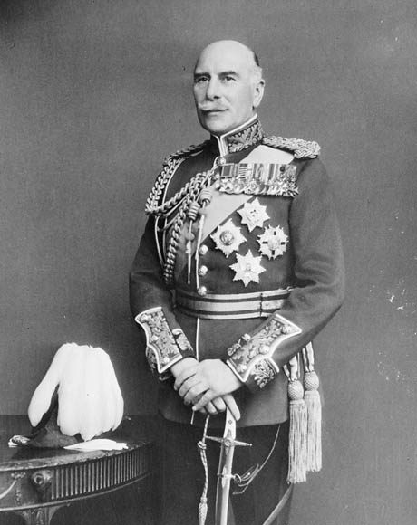
4th Governor-General · 1924–1931
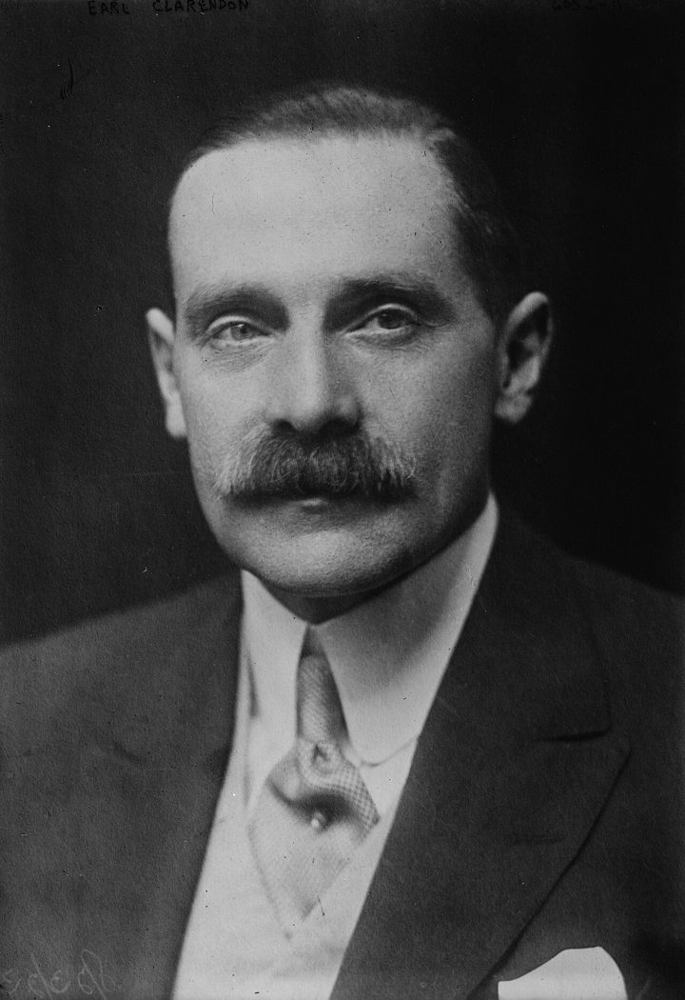
5th Governor-General · 1931–1937
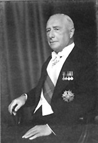
6th Governor-General · 1937–1943
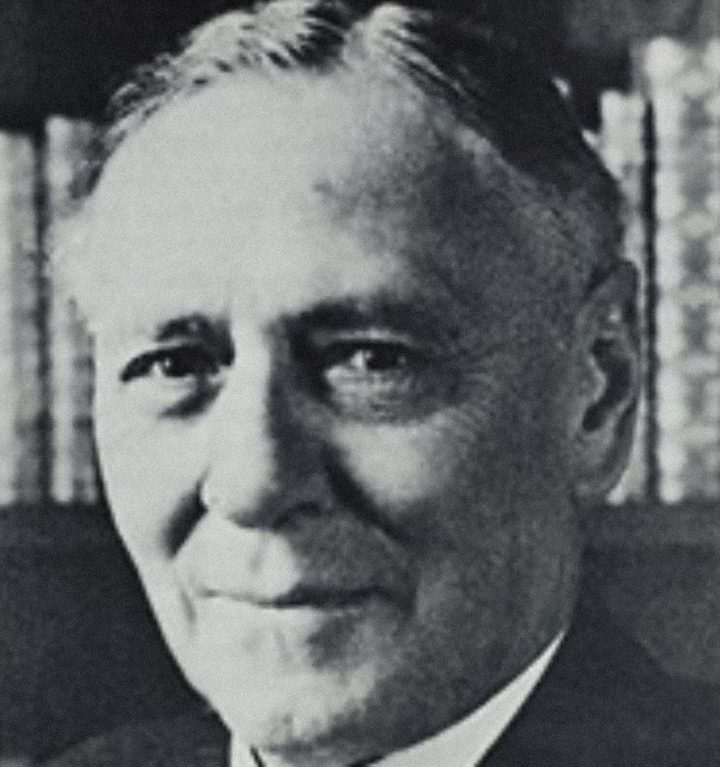
Acting Governor-General · 1943–1946
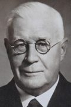
7th Governor-General · 1946–1951
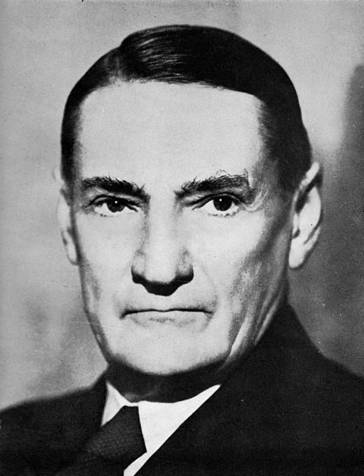
8th Governor-General · 1951–1959
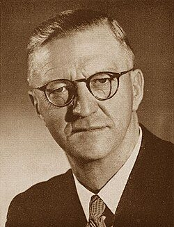
9th Governor-General · 1960–1961
South Africa became a republic on 31 May 1961. The State President was a ceremonial office until 1984, when it took on executive powers.
1st State President · 1961–1967
State President-elect · 1967
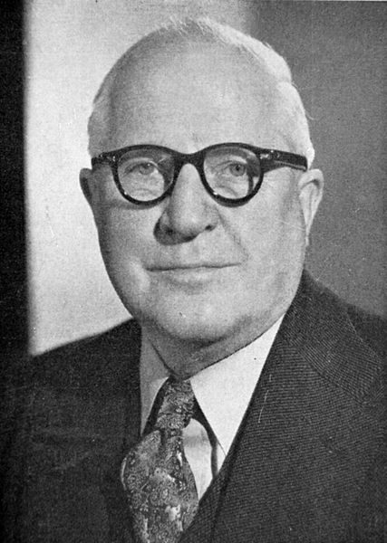
Acting State President · 1967–1968
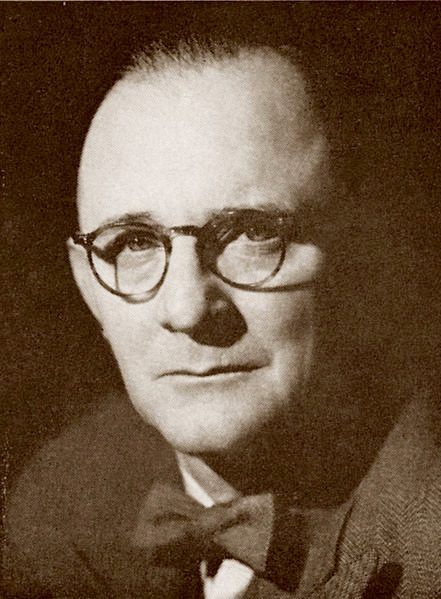
2nd State President · 1968–1975
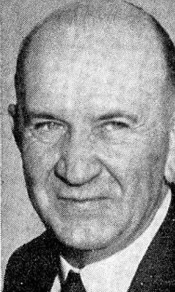
Acting State President · 1975
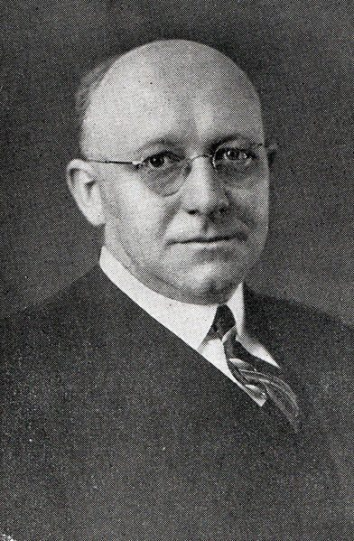
3rd State President · 1975–1978
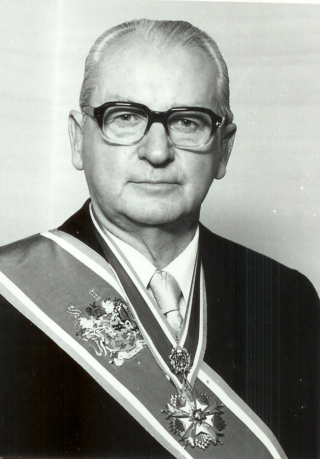
Acting State President · 1978
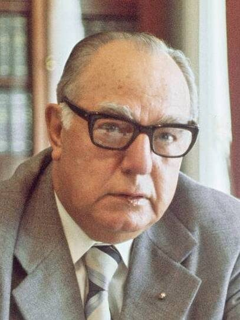
4th State President · 1978–1979
5th State President · 1979–1984
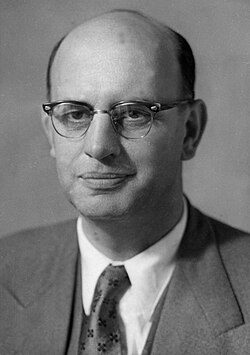
6th State President · 1984–1989
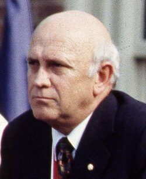
7th State President · 1989–1994
Since the first democratic election in 1994 the President, elected by the National Assembly, has been both head of state and head of government.
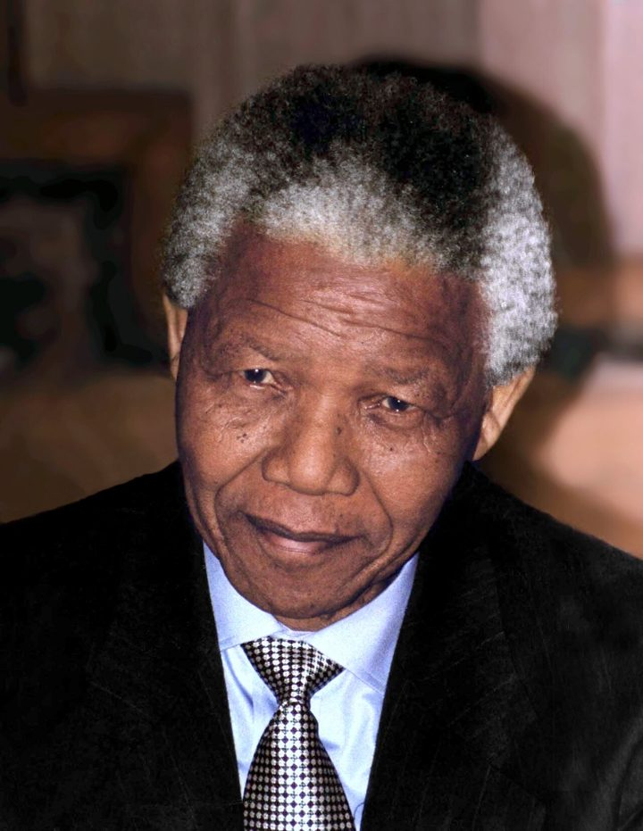
1st President · 1994–1999
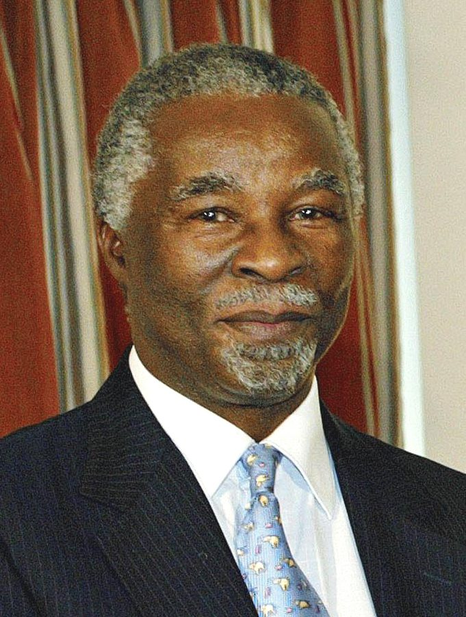
2nd President · 1999–2008
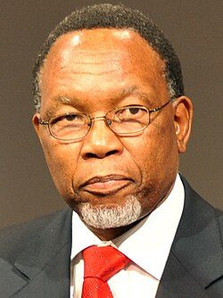
3rd President · 2008–2009
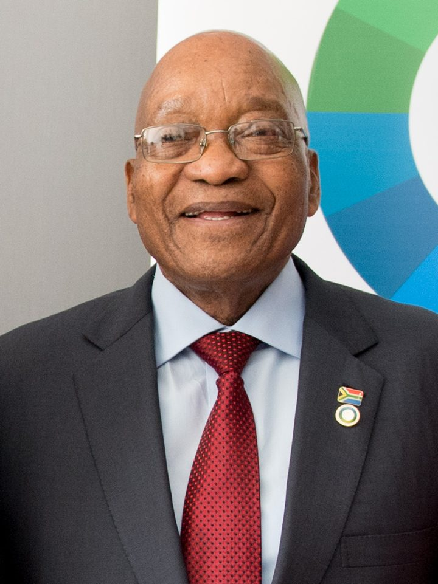
4th President · 2009–2018
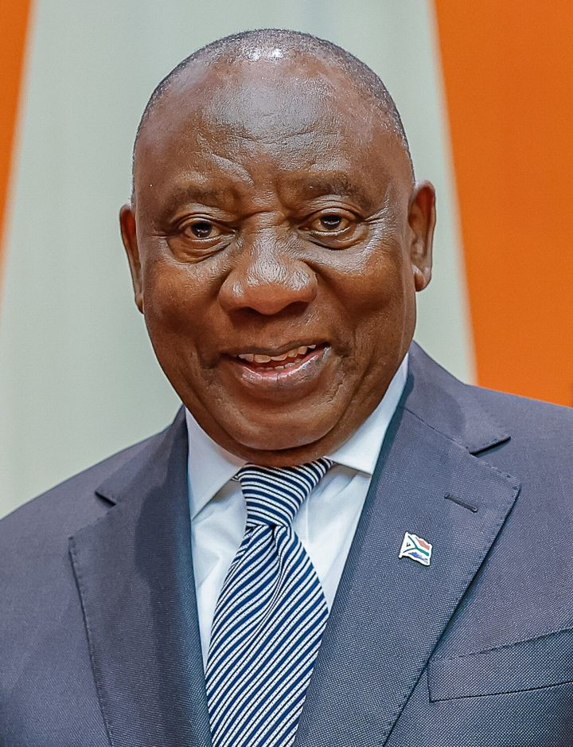
5th President · 2018–present